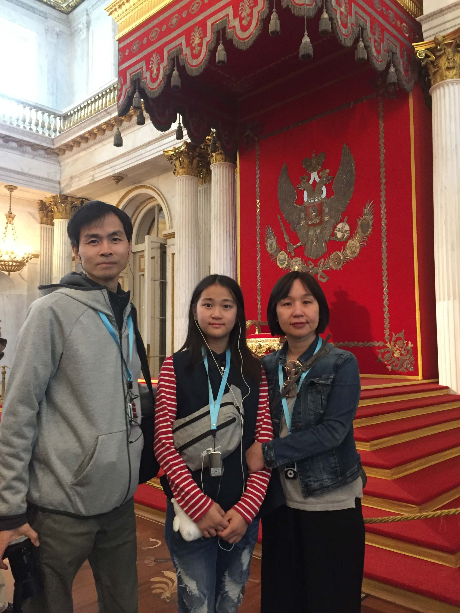
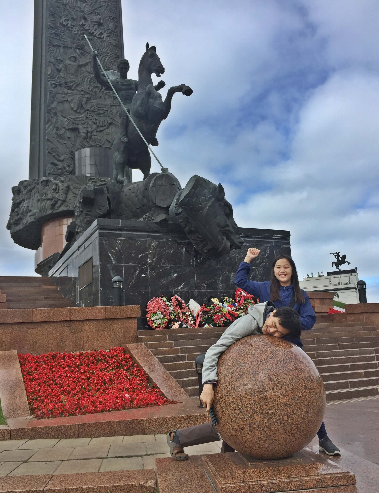

러시아
| 2019년 07월 28일 |
인천(ICN), 폴코보 국제공항(LED) |
| 07월 29일 | 궁전 다리, 뱃머리 등대, 페트로파블롭스크 요새/성당, 그리스도 부활 성당(피의 구원 사원), 카잔 대성당, 표트로대제 기마상, 성이삭 성당 전망대 |
| 07월 30일 | 페테르부크(여름궁전), 페리, 높은 건물(?), 에르미타쥐 박물관(겨울궁전), 마린스키 극장 지젤 발레 공연 |
| 07월 31일 | 삽산 기차, 모스크바, 볼쇼이 서커스 |
| 08월 01일 | 승리 박물관, 아르바트 거리, 구세주 그리스도 대성당, 모스크바 강 유람선(표트로 대제 기념비, 초코릿 공장, ...), 참새언덕 케이블카, 모스크바 대학, 부활의 문, 붉은 광장, 바실리 성당, 레닌의 묘, 크렘린, 굼 백화점 |
| 08월 02일 | 이즈마일로보 시장, 푸시킨 박물관(겔러리 휴무), 트레티야코프 미술관, 셰레메티예보 국제공항(SVO) | 08월 03일 | ICN |
느낀 점, 배운 것
- 종교, 문화, 예술이 발달한 나라로 볼거리가 너무 많다. 다시 한 번 방문하고 싶다.
- 기독교는 천주교, 개신교 이외에 정교회라는 큰 줄기가 하나 더 있다.
- 공산주의 분위기는 거의 느껴지지 않는다. 일반적인 서구 도시와 비슷하다. 실제로 공산당 지지자는 10% 내외라고 한다.
- 상트페테르부르크의 에르미타주 박물관은 사람이 너무 많다. 사전 공부를 많이 하고, 사람이 적을 때 하루 종일 둘러 보면 재밌을 것 같다.
- 러시아는 농민의 나라다. 농노제가 1917년까지 존속했으며 소련의 국기에는 농민을 상징하는 낫과 망치가 있다. 어릴 때는 소련 국기의 빨간색 바탕과 낫을 보며 공산주의의 피의 숙청을 떠올렸었다. 그런데, 이게 농민의 상징이라니... 선입견과 교육이 참으로 무섭다.
- 바실리라는 이름이 많다. 러시아어권, 독일어권에서 쓰이는 이름들 중 하나로 동로마 황제의 칭호인 바실레우스에서 유래한 이름이다.
다민족, 다종교 국가
- 주축을 이루는 민족은 루스인, 슬라브족이라고 한다.
- 그런데, 루스인의 기원이 불명확하다. 그래서, 국가명은 루스인에서 비롯된 '러시아'이지만, 슬라브 전통이 있다고 이야기한다.
- 다민족, 다종교 국가이다. 몽골족에 의한 지배, 이후 몽골족 및 북부아시아를 통합하며 다민족, 다종교 국가가 되었다. 레닌, 빅토르 최도 아시아계 혼혈이다. 또한, 표트로 대제는 민족/인종에 관계 없이 인재를 등용했으며, 푸시킨의 외조부이며 에티오피아 사람인 간니발도 이때 등용되었다.
- 아시아인들에겐 유럽이지만, 서유럽인들에겐 아시아 국가 취급을 받는다.
- 러시아는 러시아의 전통(슬라브주의)과 서유럽의 전통이 대립 충돌하며 발전했다고 한다.
정교회의 나라
- 정교회(正敎會): 바른 교회라는 직역이 말해주듯, 기독교 초기 교회의 변하지 않은 정통성을 지키고 있다는 뜻이다.
- 정교회는 동로마(수도: 비잔티움=콘스탄티노폴리스=이스탄블) 지역에서 발전했다.
- 러시아는 동로마(비잔틴) 제국 멸망(1453) 이후 로마와 비잔틴문화의 계승자로 자임하며 정교회를 발전시켰다.
- 따라서 러시아는 정교회 성당도 많으며, 이콘화와 같은 정교회 관련 문화 유산이 무수히 많다.
- 이콘화(Icon)는 예수와 성모, 성경에 등장하는 인물들의 형상을 작은 초상화 형태로 그린 것으로, 러시아 성당에 가면 벽화보다 이콘화가 먼저 눈에 들어 온다.
- 성당 내부에는 의자 및 악기가 없다. 하느님 앞에 인간이 차마 앉을 수 없으며, 인간의 육성만으로 찬양할 수 있다는 의미이다.
- 동방정교회, 러시아정교회, 정교회, 그리스정교회는 엄격히 구분할 수는 있겠지만, 모두 같은 말로 이해해도 될 정도이다.
붉은 광장과 성 바실리 대성당
- 너무나 아름답다. 감동적이다.
- 붉은 광장 ....
문화 예술의 나라
- 러시아는 문화 예술의 나라이다. 특히, 종교, 진리, 인간과 삶의 문제를 고민한 작품들이 많다.
- 톨스토이, 도스토옙스키, 막심 고리키 등의 작품들이 그러하다. 《죄와 벌》《사람은 무엇으로 사는가》《까라마조프가의 형제들》《어머니》...
- 화가들도 전제정치에 저항하거나, 민중들의 삶을 표현한 그림이 많다. 그래서, 서유럽에서 회화의 형식만을 중요시하는 인상파가 득세할 때, 러시아에서는 인간과 삶을 조명하는 풍경화, 풍속화가 발달했다.
- 러시아인들이 생각하는 최고의 문학가는 푸시킨이다. 톨스토이, 도스토예프스키는 한 수 아래로 치는 것 같다. 프랑스어가 귀족의 언어처럼 사용되던 때에 러시아어를 사용하여, 러시아의 자긍심을 높였다.
- 유명한 음악가도 많고, 발레 공연도 세계 최고를 자랑한다.
- 여담으로 둥근 무대에서 펼쳐지는 서커스도 한 번쯤 볼만하다. 특히, 아이들에겐 최고의 경험으로 기억된다.
러시아의 상징 쌍두 독수리
- 로마노프 왕조 (1613~1917) 및 러시아(1991~)의 국장.
- 러시아를 여행하다보면 종종 볼 수 있다.
- 러시아 이외에 동로마, 신성로마제국 및 동유럽의 여러 국가에서 문장으로 사용했다.
|
▶ 겨울궁전 성조지홀의 왕좌 |
 |
|
▼ 여름궁전의 쌍두 장식 |
|

|
용과 싸우는 성 게오르기우스
- 잉글랜드, 카탈루냐, 모스크바, 조지아, 군인, 보이스카웃, 기사 등의 수호성인.
- 흔히 용과 싸우는 성화를 보았을 때 남자의 등에 날개가 있으면 성 미카엘 대천사, 날개가 없으면 성 게오르기우스라고 생각하면 된다.
- 용은 몽골족의 상징으로 많이 사용한다. 지금도 카잔시의 상징은 용이다.
- 몽골의 지배에서 벗어나고, 나중에는 몽골족의 나라 카잔 칸을 정복한 것을 표현하는 방법으로, 용과 싸우는 성 게오르기우스가 가장 적합했으리라 추측된다.
- 러시아 국장에도 들어가 있다. 아래 그림 참조.
|
▶ 모스크바 승리 공원의 '승리 기념물' |
 |
|
▼ 러시아 국장 |
|

|
영화 에너미 앳 더 게이트, 2001
- 제2차 세계대전 중 최대의 격전지였던 스탈린그라드 전투에서 발생한 소련과 독일의 두 저격수간의 대결을 그린 영화이다.
- 영화의 앞부분에 소련군을 매우 무지하고 잔인한 군대로 표현했는데, 이것은 미국의 입장이 많이 반영된 것으로 보인다.
- 영화 제목은 로마 속담 "한니발이 바로 문앞에 있다(Hannibal ad portas)"에서 따온 말이다. 한니발이 로마 성 앞까지 진격했던 상황을 묘사한 속담으로 적이 바로 코앞에 와 있다는 뜻이다. 로마 여인들은 이 말로 우는 아이들을 달랬다고 하며, 이는 로마가 멸망할 때까지 지속된 표현이라고 한다.